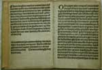
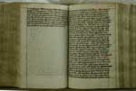
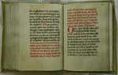

Dagelijks geloof
Vrouwen en religie in de laatmiddeleeuwse stad
|
|

| 1. | Vrouwen in de stad | |
| 2. | Kluizenaressen | |
| 3. | Begijnen |
2. Kluizenaressen
Drie voorbeelden van de rol die kluizenaressen in de literatuur konden spelen. Suster Bertken, die 57 jaar besloten geleefd heeft in een door haar zelf betaalde kluis bij de Buurkerk in Utrecht, is ook bekend als auteur (2.1). Een anonieme kluizenares verschijnt als hoofdfiguur in een exempel dat vertelt hoe zij belaagd werd door de duivel (2.2). Van een vrij breed verspreid gebed tot Maria wordt verteld dat een engel het aan een kluizenares heeft geleerd toen zij eens haar kluis wilde verlaten om naar Rome te trekken voor een aflaat. Zo wordt de kluizenares verspreidster van een gebed (2.3).
|
2.1 || Suster Bertken. [1497 G 33] Leidse druk van 1518 (uitgegeven door Jan Seversz.) met geschriften van de Utrechtse kluizenares Suster Bertken. Een seer deuoet boecxken van dye passie ons liefs heren ihesu cristi tracterende geordineert na dye getijden der heyliger kercken met veel ander gebeden ende punten ende is gemaect van een deuote Clusenersse geheten suster Bertken die lvij. iaren besloten heeft geseten tot Vtrecht in dye Buerkerke in een cluse gode dienende ende is ghestoruen op sint Lebuijns dach ende leyt begrauen in haer Cluse Int iaer ons heren m.ccccc. Ende xiiij. |
|  |
|
2.2 || Kluizenares tegenover de duivel. [LTK 224] Verzamelhandschrift (papier, 2e helft 15e eeuw) met devote gedichten, preken en exempelen. Een van de exempelen handelt over een kluizenares die in haar streven naar gelatenheid gedwarsboomd wordt door de duivel: Het was een devoet persoen die hoer selven besloet in ene clusen. Dese persoen was seer getoghen van binnen totten hoghen wech der ghelatentheit te volgen… |
|  |
|
2.3 || Aflaatgebed van een kluizenares. [LTK 297] Getijdenboek uit 1426 met onder meer een gebed tot Maria waarmee aflaat van zonden kan worden verworven (en daarmee bekorting van straf in het hiernamaals). Het aflaatgebed was aan een kluizenares geleerd door een engel, die haar ervan weerhield haar kluis te verlaten. Het was een clusenaerster ende hadde grote begheerte in een jaer van gracien te trecken tot Romen ... Het gebed zelf begint met: O du alre soetste glorioselte begheerlicste Maria… |
|  |
| vorige pagina | volgende pagina |